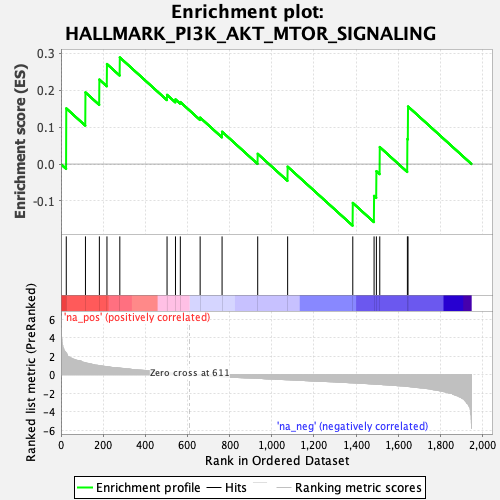
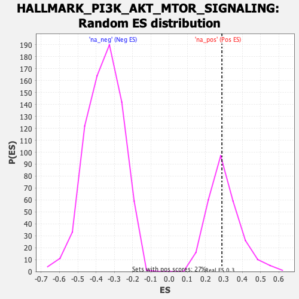

| | | Dataset | gsea_amp_ratios |
| Phenotype | NoPhenotypeAvailable |
| Upregulated in class | na_pos |
| GeneSet | HALLMARK_PI3K_AKT_MTOR_SIGNALING |
| Enrichment Score (ES) | 0.28889245 |
| Normalized Enrichment Score (NES) | 0.9671477 |
| Nominal p-value | 0.49635038 |
| FDR q-value | 0.77579594 |
| FWER p-Value | 0.988 |
Table: GSEA Results Summary

Fig 1: Enrichment plot: HALLMARK_PI3K_AKT_MTOR_SIGNALING
Profile of the Running ES Score & Positions of GeneSet Members on the Rank Ordered List

Fig 2: HALLMARK_PI3K_AKT_MTOR_SIGNALING: Random ES distribution
Gene set null distribution of ES for HALLMARK_PI3K_AKT_MTOR_SIGNALING